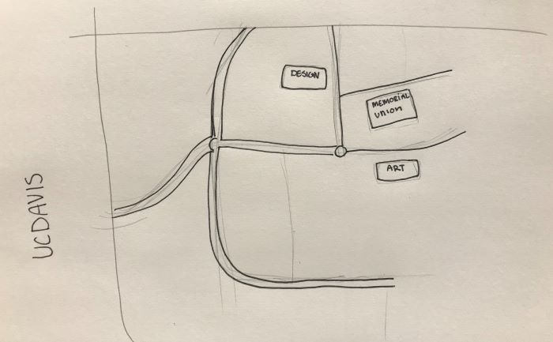
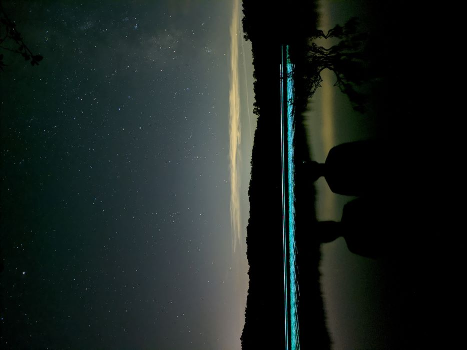

Erika's Reading Response Journal
"Game Design UX Best Practices"
09 November 2021
There are so many things that go unnoticed in design and especially game design that you might not even think of when you're playing. This is a sign that the design is good. In this article the author talks about all the things that drive me nuts about game designs and specifically app game design. The placement of elements is huge in terms of leading the user to what the designer wants them to do. He mentioned getting rid of the X at the top of pop ups and clearly state the actions that buttons will do instead. Which I think is the whole point of design in the first place is good communication between designer and user.
"Visual Thinking Analysis"
1 November 2021
I am not going to lie to you, this photo isn’t interesting right now. It is the potential that makes it interesting. I am planning on drawing a more detailed map that will look very sketchy and similar to this one but with much more detail. I want to show some different buildings and landmarks from around campus with this map. My collection is the buildings around UCD and something that might be unique about them. Maybe I will critique them or rate them based on how I feel about those buildings. I think that as I get nearer to graduation I realize that UCD has made an impression on me and I think a good way to summarize how this campus affected me as a student.
Baadal’s image is about a night sky and two silhouettes against the glowing water. There is a nice little bit of contrast going on in this photo. There is the contrast of colors with the bright teal blue on the water and then these dark smoaky bits of yellow that are seen in the cloud and it’s reflection. The most obvious thing about this image is that it is someone's night time view of the water and the sky but I think on a deeper level there is a lot to be uncovered. One person looks to be in focus and the other seems to be just a little bit blurred. It makes the reader wonder what their relationship is, especially since the second form looks more like one of the reflections on the water instead of someone standing close by. As well as the almost immediate question of what is that glow? Biologists might say that it is a microorganism of some kind but only the author could really give us the true answer to that.

Fig.1 - E. Nordman UCDavis 2021

Fig.2 - B. Bhojak UCDavis 2021
"Website That Uses Images in an Interesting Way"
27 October 2021
Of the websites that use lots of images I think that portfolios are some of the most interesting to interact with. Made Architecture has an incredibly engaging portfolio that excites the users at the very beginning with a simple logo and beautiful pictures of their work scrolling through the background. As you scroll down you can see smaller pictures of their major projects that is clean and simple leaving the eye no room to get distracted by anything else other than the photos. When the user hovers over the photo it greys out and allows you to read the name of the project while still keeping the focus on the photos. I think that this is a great portfolio and a great use of photos that keeps the users attention without making the website too messy.
Go check Made Architecture out for yourself!
"Best Practices for Modals / Overlays / Dialog Windows"
20 October 2021
The dreaded pop-ups. There are many things that I know in the regular world as being negative things that are put into a different context from a designer/CS perspective. This is one of them. While people who are designing these websites think of these as getting users attention, from a users perspective they are more of an annoyance. Nothing is more tiring than trying to find information online or going shopping just to get stalled on a pop-up. While Ms. Baskandari claims that these pop-ups are attention grabbing; they come with many downsides. I think as a community of designers we need to try and step away from these as alerts of ads. She makes a good point by saying that unprompted these can startle users and put them off. However, she tries to put these overlays into better light by highlighting their use within apps on your phone. While this may be helpful there are still so much inconsistency when designing these overlays that it makes navigating apps and websites on your phone almost a mystery. On top of inconsistency, it becomes even more troubling when there are issues with usability within these overlays such as, screen size hiding the exit options, scrolling being jumpy and sentences being cut off by the screen. Until designers find a way to fix a lot of these issues I think it would be better to just not use these in website designs.
"Best Practices for Form Design"
18 October 2021
This article by Salim Ansari is about how to improve user input websites so that they are easy to use and understand in 20 tips. Many of the tips provided were based in communication and making sure that the user is understanding what is being asked of them by the webpage. In many cases the design does not communicate the actions well and by doing simple changes we can improve these websites in the future. Tip number 5 is my favorite I think because I experience problems on websites where it is hard for me to understand what is actually required information. By actually typing out the word optional I think that it makes it way easier to understand. Another tip that I really hope to see more in user input design is using less and less drop down menus. I like the checkboxes much more because they make it easier to fill out forms on your phone. There are so many cases where I need to fill out a form on my phone and the drop down menu cuts off the endings of the options. It makes it very difficult to try and finish my forms. Something that I think is really understated in this article is the use of the tab key to move around the page. I use the tab key for convenience on my computer but sometimes it just doesn't work for certain forms. I assume that the tab key is also used for people with disabilities so I couldn’t imagine the frustration of having documents that I couldn’t use because of such a simple tabbing issue.